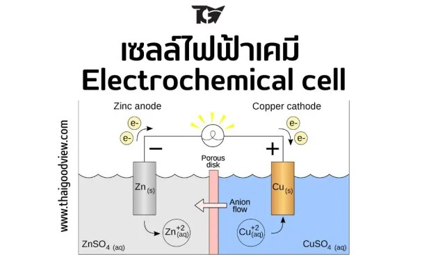

ไฟฟ้าเคมี
ไฟฟ้าเคมี เป็นการศึกษาเกี่ยวกับปฏิกิริยาเคมีที่ทำให้เกิดกระแสไฟฟ้า ตามการถ่ายเทของอิเล็กตรอน คือ ปฏิกิริยาที่มีการถ่ายเทอิเล็กตรอน เรียกว่า ปฏิกิริยารีดอกซ์ (Redox Reaction)
โดยปฏิกิริยารีดอกซ์ (Redox Reaction) ก็คือ ปฏิกิริยาที่มีการเปลี่ยนแปลงเลขออกซิเดชันของสาร โดยปฏิกิริยาเคมีไฟฟ้าสามารถแยกออกเป็นปฏิกิริยาย่อย (หรือที่เรียกว่า ครึ่งปฏิกิริยา) ได้ 2 ปฏิกิริยา ได้แก่
ครึ่งปฏิกิริยาที่มีการให้อิเล็กตรอน เรียกว่า ปฏิกิริยาออกซิเดซัน
ครึ่งปฏิกิริยาที่มีการรับอิเล็กตรอน เรียกว่า ปฏิกิริยารีดักซัน
การกำหนดเลขออกซิเดชันมีเกณฑ์ดังนี้
1. เลขออกซิเดชันของธาตุอิสระทุกชนิดไม่ว่าธาตุนั้นหนึ่งโมเลกุลจะประกอบด้วย กี่อะตอมก็ตามมีค่าเท่ากับศูนย์ เช่น Na, Zn, Cu, He, H 2, N 2, O 2, Cl 2, P 4, S 8 ฯลฯ มีเลขออกซิเดชันเท่ากับศูนย์
2. เลขออกซิเดชันของไฮโดรเจนในสารประกอบโดยทั่วไป (H รวมตัวกับอโลหะ ) เช่น HCl , H 2O , H 2SO 4 ฯลฯ มีค่าเท่ากับ + 1 แต่ในสารประกอบไฮไดรด์ของโลหะ (H รวมตัวกับโลหะ ) เช่น NaH , CaH 2 ไฮโดรเจนมีเลขออกซิเดชันเท่ากับ -1
3. เลขออกซิเดชันของออกซิเจนในสารประกอบโดยทั่วไปเท่ากับ -2 แต่ในสารประกอบเปอร์ออกไซด์ เช่น H 2O 2 และ BaO 2 ออกซิเจนมีเลขออกซิเดชันเท่ากับ -1 ในสารประกอบซุปเปอร์ออกไซด์ ออกซิเจนมีเลขออกซิเดชันเท่ากับ -1/2 และในสารประกอบ OF 2 เท่านั้น ที่ออกซิเจนมีเลขออกซิเดชันเท่ากับ +2
4. เลขออกซิเดชันของไอออนที่ประกอบด้วยอะตอมชนิดเดียวกันมีค่าเท่ากับประจุที่แท้จริงของไอออนนั้น เช่น Mg 2+ ไอออน มีเลขออกซิเดชันเท่ากับ +2 ,F - ไอออนมีเลขออกซิเดชันเท่ากับ -1 เป็นต้น
5. ไอออนที่ประกอบด้วยอะตอมมากกว่าหนึ่งชนิด ผลรวมของเลขออกซิเดชันของอะตอมทั้งหมดจะเท่ากับประจุที่แท้จริงของไอออนนั้น เช่น SO 4 2- ไอออน เท่ากับ – 2 เลขออกซิเดชันของ NH 4 + ไอออนเท่ากับ + 1 เป็นต้น
6. ในสารประกอบใดๆ ผลบวกของเลขออกซิเดชันของอะตอมทั้งหมดเท่ากับศูนย์ เช่น H 2O H มีเลขออกซิเดชันเท่ากับ + 1 แต่มี H 2 อะตอม จึงมีเลขออกซิเดชันทั้งหมด เท่ากับ + 2 O มีเลขออกซิเดชันเท่ากับ – 2 เมื่อรวมกันจะเท่ากับศูนย์เป็นต้น